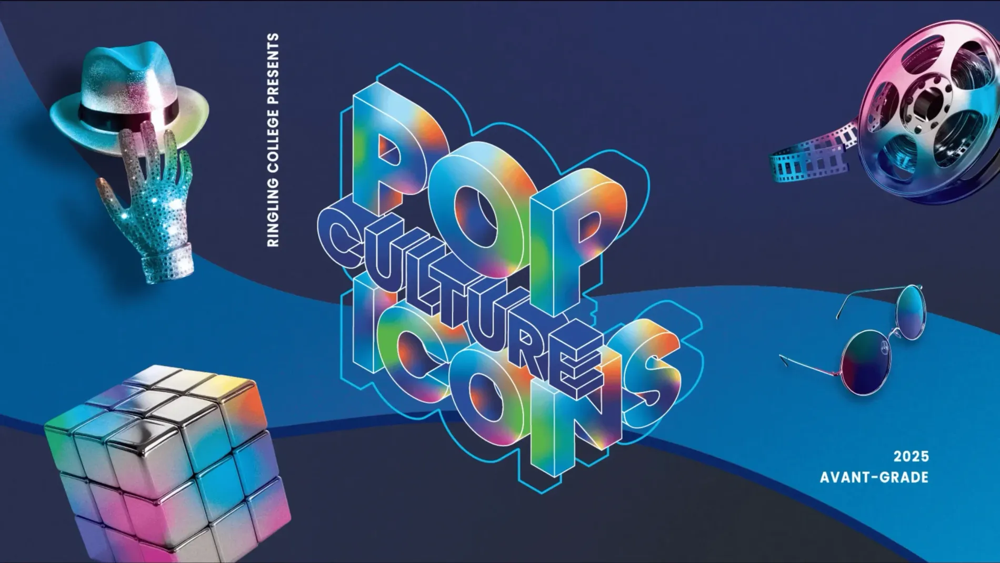
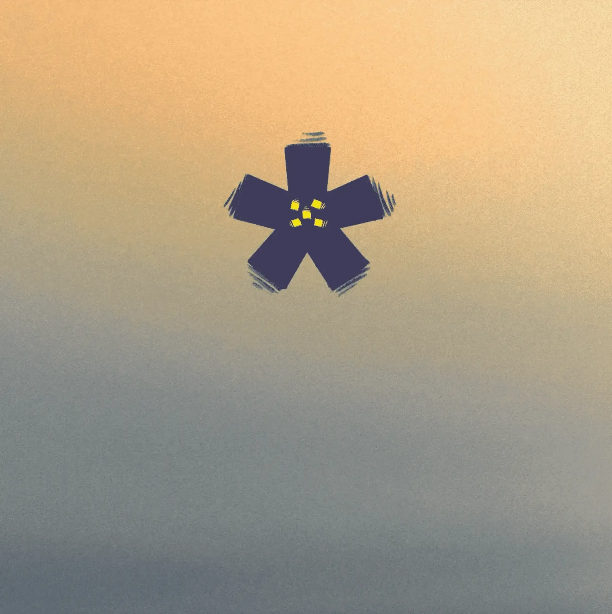

NEW YORK, US
36.7783° N, 119.4179°
Home
Works
Break
About
0
1
0
1
0
1
JASMINE GUNARTO
ABOUT JASMINE
SINGLE FRAME
EXPRESSION
FUN
EXPERIMENTS
CREATIVE
BREAK

PRECISELY
REFINED SELECTION
FOCUSED
VISUAL SHOWCASE
CAREFULLY
CHOSEN NARRATIVES
CURATED
PROJECT
PREV
NEXT
SEE NEXT
Elemental Alphabet
07
10
PROJECTS

HOME
VISIT